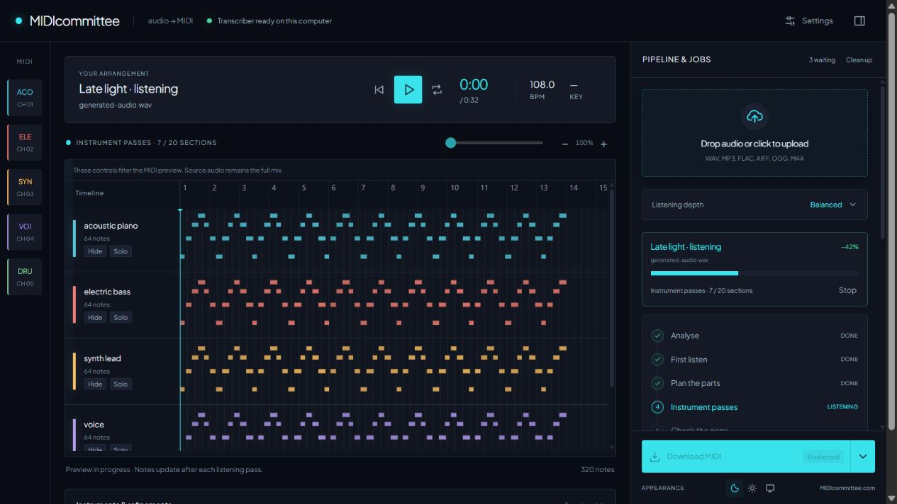

Audio → editable MIDI / 2.1 beta
Your music.
Ready for its
next life.
Turn a recording into notes you can work with. MIDIcommittee is a free Windows desktop app that listens on your own NVIDIA GPU, then brings editable MIDI back into your music-making.
Windows 11 x64 · NVIDIA / CUDA required · Separate model terms
Room to keep working
From recording to arrangement.
Queue a few songs, guide the instruments if you like, and follow the notes as the listening passes complete.

These are notes to shape, not a finished performance. Expect to check timing, labels and the occasional wrong or missing note in your DAW. The app’s Play button auditions your original recording; it does not synthesise the MIDI.
A small detour. A fresh starting point.
Back to making music.
Keep it simple, or give the committee a little direction. No AI-provider key is needed.
- 01
Bring a recording.
Add a song to the desktop queue. Name it, line up a batch, and leave the listening depth at Balanced to get started.
WAV · MP3 · FLAC · AIFF · OGG · M4A - 02
Let the parts emerge.
The local model listens in passes. Add instrument hints, a known tempo or a MIDI guide when you have something useful to tell it.
Optional hints · Stop and resume - 03
Make it yours again.
Export combined MIDI, separate instrument files or a REAPER project with reference audio. Choose your sounds and start editing.
Editable notes · Your DAW · Your next idea
Your desktop does the listening
A local studio.
A little breathing room.
Audio transcription runs on your PC. This website does not receive songs or run conversions.
- Local by default
- MuScriptor processes the recording on your NVIDIA GPU. Installation and model downloads need internet access.
- Optional AI planning
- If enabled, your chosen API provider receives compact note statistics and the hints you enter, not your audio or original filenames. Provider charges may apply. Local rules work without it.
- An optional phone remote
- Use Tailscale to reach your own running desktop privately. The phone controls the session; the PC still runs the model. Remote access is off at each app start.
A small Windows beta
First, meet your PC.
MIDIcommittee is free to download. This CUDA build needs a compatible Windows desktop and a little first-run preparation.
What you’ll need
- Windows 11, 64-bit
With Microsoft Edge WebView2 Runtime.
- An NVIDIA GPU and suitable drivers
This build uses CUDA. Other GPUs, CPU-only use, macOS and Linux are not supported by this beta.
- Time, internet and disk space for setup
The first runtime and model downloads are substantial, with several gigabytes of dependencies. Python 3.11 is required; setup offers it separately if missing.
- Your own Hugging Face model access
Review and accept the official MuScriptor conditions in your own account. Model weights are downloaded separately and are not included in the installer.
Something worth
working with.
A desktop home for your recordings’ next chapter.
The app’s own code is MIT-licensed. MuScriptor weights use CC BY-NC 4.0 and additional model conditions. The app licence does not grant commercial rights to the model. Only transcribe recordings you are entitled to use.
Early beta: manually checked on Windows 11 with an RTX 4070. A complete first installation on a second clean PC is still pending. Compatibility with other GPUs is not yet verified; a minimum VRAM specification has not been established.
This installer is unsigned and has no verified publisher identity. Windows may show a warning. Check the download’s origin and checksum before deciding to run it.
- 01
Install, open, prepare.
Run the installer and open MIDIcommittee. Choose Prepare local runtime and follow setup. If interrupted, Resume setup reuses completed work.
- 02
Get your model access.
Read the official model conditions, obtain access through your own Hugging Face account, then use the official CLI sign-in guide. Setup does not accept terms or sign in for you.
- 03
Skip the optional bits. Start listening.
You can skip AI planning. Choose Start MIDIcommittee, add a recording to the right-hand drawer and choose Queue song. The first authorised use downloads the model.
- 04
Take the notes into your DAW.
Select a ready session, open the arrow beside Download and choose your formats. Extract REAPER packages before opening them, and assign instruments to hear your MIDI.
Keep the session moving
A few useful answers.
The beta is still finding its feet. These are the things worth knowing before your first listen.
Does it separate stems or recreate the original sounds?
MIDIcommittee transcribes notes. It does not export isolated audio stems or recreate the recording’s instruments, production or vocal sound. Open the MIDI in your DAW and choose instruments to hear it.
The studio’s Play button auditions the original full mix. Lane Hide and Solo controls change the MIDI drawing, not the audio.
How long will a song take? Which listening depth should I use?
It depends on your GPU, the recording and the number of listening passes. There is no promised real-time speed. Progress reflects stages and sections; it is not an exact time remaining.
Start with Balanced. Quick draft gives an initial sketch; Extra detail · Thorough adds listening when parts seem missing. More passes can also introduce wrong or duplicate notes.
Keep Settings → Inference performance → Strict · float32 for normal use. Experimental modes can change or miss notes.
First setup is taking a while, or model access failed.
Runtime/CUDA dependencies and model weights are separate downloads. Open Setup details and logs to see progress. If setup was interrupted, use Resume setup; a reboot is normally unnecessary.
For an access error, confirm that your own Hugging Face account has access to the official model, then sign in with its official CLI. A Hugging Face token is for model downloads. It is different from an optional AI-provider key; do not put it in planner settings or song hints.
For WebView2 installation information, use Microsoft’s official page.
Do I need an API subscription or AI-provider key?
No. Local transcription and local planning rules work without one. The optional planner can use Anthropic, OpenAI, Gemini, OpenRouter or a compatible endpoint. Choose a model available to your own account; the provider may charge for requests.
If enabled, planning sends note statistics and your entered hints to that provider, not audio or original filenames. Keep private information out of hints. Saving settings makes no connection-test request; the separate test button sends a small request and may incur a charge. Keys are encrypted for the current Windows user with DPAPI.
Can I stop, come back later, or tidy up a session?
Stop keeps completed passes. Resume continues from those checkpoints. Completed results persist when you reopen the app; interrupted work may need Resume.
Download anything you want to keep before using Clean up. Review its confirmation: removing a session deletes that session’s copied audio and generated files, and stops selected active work. It leaves your original recordings and already-saved downloads alone. Some diagnostic records and logs are retained.
Sessions and settings live in your Windows user’s MIDIcommittee app-data folder. Setup details and logs identifies the active profile; use the same profile after upgrading.
What can I export? Why is Download greyed out?
Select a session with available outputs first. A stopped or failed session may not have a usable export yet. Choose combined MIDI, one MIDI per instrument, bar-aligned MIDI, a REAPER project, or a REAPER package with reference audio. Reports, source audio and diagnostic passes are also available.
Multiple outputs are grouped by song in a ZIP. Extract a REAPER package before opening it. Diagnostic passes can overlap or duplicate notes; the normal combined MIDI is the usual place to start.
If a transfer was interrupted, request a fresh download. Transfer links are single-use; completed session outputs remain available.
Can I use a phone, basic laptop or VM?
A phone or basic laptop can act as a private browser remote for your own running NVIDIA-equipped PC. Install Tailscale on both devices, join the same Tailnet, then enable Settings → Use your phone on the processing PC and pair using the one-use code.
The NVIDIA-equipped PC performs transcription. Remote access is off at each app start, and disabling it revokes pairings. Keep your Tailnet and paired devices trusted: a paired device can manage sessions and download results. This website never connects to your desktop.
A virtual machine can help test a fresh Windows installation, but it does not add a physical GPU. GPU access inside a VM needs its own setup and has not been validated for this beta. On a PC without NVIDIA graphics, skip the large CUDA runtime/model download.
May I use it for commercially released music?
The app code’s MIT licence and the model’s permitted uses are separate. The MuScriptor weights have a non-commercial restriction and additional conditions. Owning the input music does not, by itself, resolve every model-use question.
Commercial-use clarification is still pending. This website does not grant commercial permission. Read the official model terms and obtain any permission your intended use requires from the rights holders.
Where is the source code? How can I help?
The application’s own code is MIT-licensed. A public source release is planned; the repository is not public yet.
For now, the most useful contributions are installation feedback from compatible Windows PCs, clear bug reports, accessibility observations and notes about confusing steps. Please ask before sending audio. A short description and redacted error are a better first report.
How do I report a problem without sharing private files?
Email the version, your Windows version and GPU, what you tried, and the stage/error shown. Review logs first. Leave out API keys, Hugging Face tokens, personal file paths and private audio.
MIDIcommittee version: 2.1.0 beta Windows version: NVIDIA GPU and driver: What I tried: What I expected: What happened / stage / redacted error: Can I repeat it?: Optional: AI planner enabled? (no keys)
Email beta feedback — opens your email app; there is no contact form.
Made by bennypixel
A useful tool.
A shared curiosity.
MIDIcommittee is a musician’s project: a way to spend less time rebuilding a recording and more time finding out what it could become.
The contribution is the desktop workflow around remarkable work by researchers and open-source contributors. Their work deserves the credit.
Help shape the betaBuilt on good work.
- MuScriptor
- Audio-to-MIDI transcription by Kyutai × Mirelo. MIT code; CC BY-NC 4.0 weights and model conditions.
- Beat This!
- Beat and downbeat tracking by CPJKU. MIT code and published weights.
- Basic Pitch
- Spotify’s audio-to-MIDI project. Apache-2.0 licence and NOTICE.
- Plus Jakarta Sans
- Typeface by the Plus Jakarta Sans Project Authors. SIL Open Font License.
MIDIcommittee application code: MIT. Dependencies retain their own licences. These independent projects do not endorse MIDIcommittee.
A note on privacy.
This is a static download and information site. It has no accounts, analytics scripts, advertising, contact form or song-upload service. Its fonts and images are served from this site. The hosting service may process ordinary request data to deliver the pages and downloads.
External links take you to their respective services. Email feedback is sent through your email provider. The desktop app’s local processing, optional API planning and optional Tailscale access are described above.